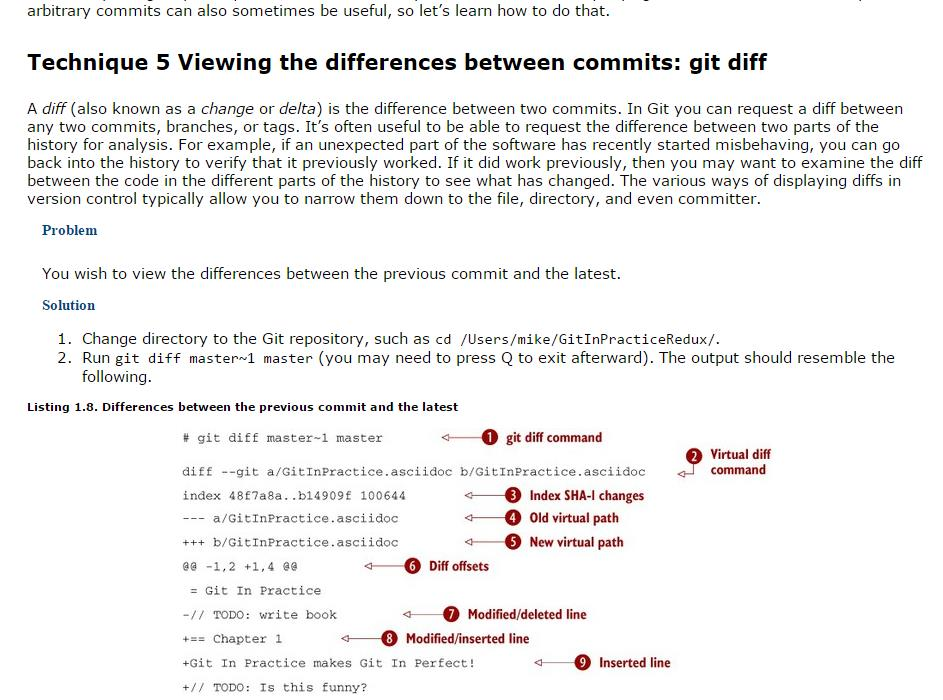
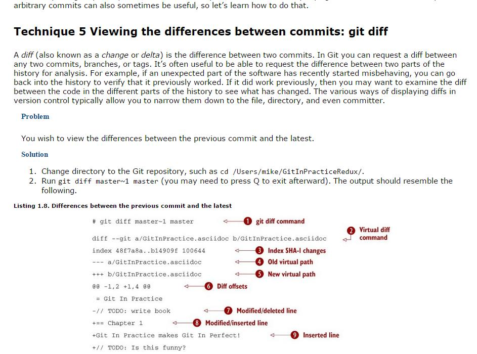
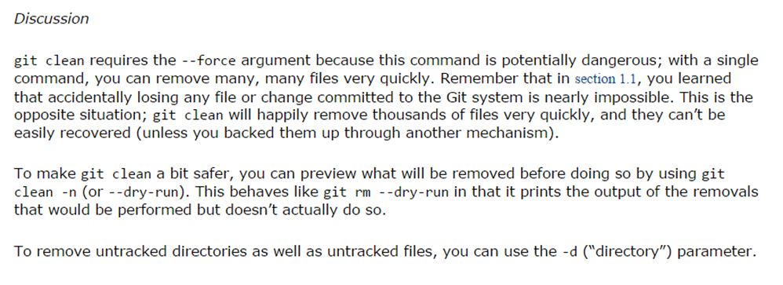
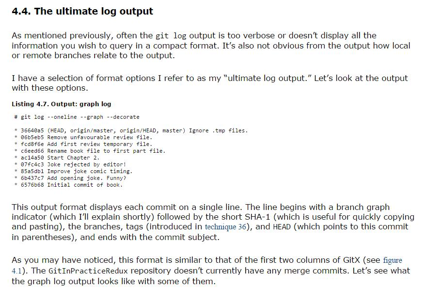
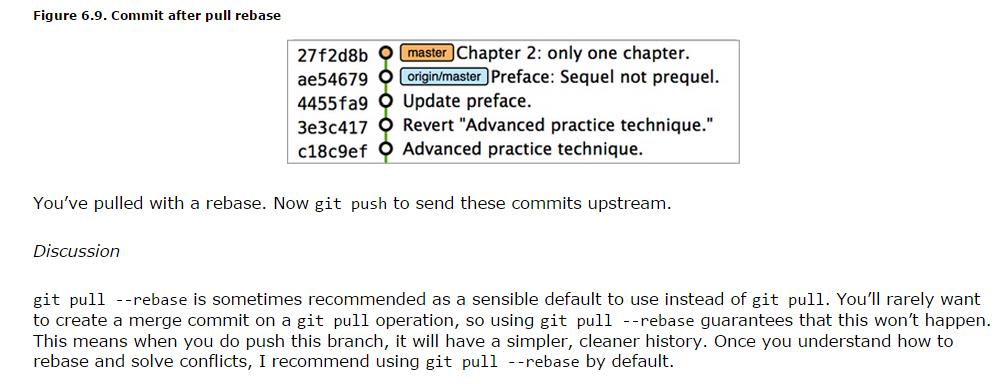

From Git in Practice, Mike McQuaid, Manning Publications, Pub. Date, September 29, 2014
Accessed from Safari Books Online-
Part 1. Introduction to Git
How to install Git on Windows.
Creating a repository in GIT
Listing files created in a new repository
Creating a new commit: git add, git commit
Technique 2 Building a new commit in the index staging area: git add
Technique 3 Committing changes to files: git commit
Listing 1.6 Making a second commit
1.4.1 Git Object store
1.4.2 Parent commits
1.4.2 Technique 4 viewing history: git log, gitk, gitx
gitlog
gitk, gitx

Re-writing history
 

Diff formats

Word diff format and refs
HEAD, master, modified refs


Chapter 2 Remote Git
git remote add


Output: creating a remote repository

Authoritative Version Storage

Technique 7 pushing changes to a remote repository: git push

Issues and solutions re: pushing to remote repository
There are two potential problems pushing to a remote repository:1. On windows you must first use git remote set-url origin instead of git remote add origin.
2. You must first pull from the remote repository before you push to it.
Technique 8 cloning a remote repository: git clone
Technique 9 pulling changes from another repository
Technique 10 git fetch from a remote without modifying local branches


Technique 11 creating a new local branch

Technique 12: git checkout


Technique 13 git push to remote

Technique 14 git merge


Rebasing

Technique 15 git delete origin
Technique 16 Deleting current local branch after merging
Part 2: Git essentials
Ch. 3 Filesystem interaction
Technique 17 renaming or moving a file: git mv

Technique 18 git rm, removing a file
Technique 19 git reset
Technique 20 git clean
Technique 21 gitignore

Technique 22 deleting ignored files
Technique 24 git stash pop
Technique 25 git stash clear
Technique 26 assume unchanged
Technique 27 ls files -v

Technique 28 stopping assuming files are unchanged
Technique 29 showing only certain commits
Technique 30 commits with formatting

git log --oneline --graph --decorate

Technique 31 git blame
Technique 32 git bisect


git bisect continued

Advanced branching Ch. 5
Technique 33 merge commit

git merge --strategy
Technique 34 resolving merge conflicts

5.2 graphical merge tool
Technique 35 git rerere
Technique 36 git tag
Technique 37 git describe
Technique 38 git cherry-pick
Technique 39 git revert
Technique 40 git cherry
Ch 6 Rewriting history
Technique 41 git reflog
6.1 Avoiding and recovering from disasters
Technique 42 git reset
Technique 43 rebasing
Technique 44 git rebase --interactive
Technique 45 git pull --rebase
Technique 46 git push --force

Technique 47 git filter-branch
Part 3 Advanced Git
Ch 7 Personalizing Git
Technique 48 git config --global
Technique 49 git config flags
7.1 Useful configuration settings
7.1.1. Colored output
7.1.2 Git 2.0 push defaults
7.1.3 Pruning branches automatically
7.1.4. Global ignore file
7.1.5 git help --help --web
7.1.6 Storing passwords
7.1.7. Storing arbitrary text
7.1.8. Autocorrect commands
Technique 50 aliasing commands
7.2. Sharing Git config in dotfiles
Technique 51 showing current branch
Ch. 8 Submodules
Technique 52 git submodule add
Technique 53 git submodule status
Technique 54 git submodule update --init